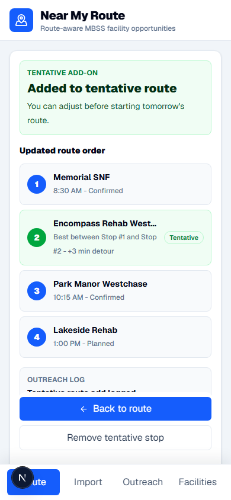
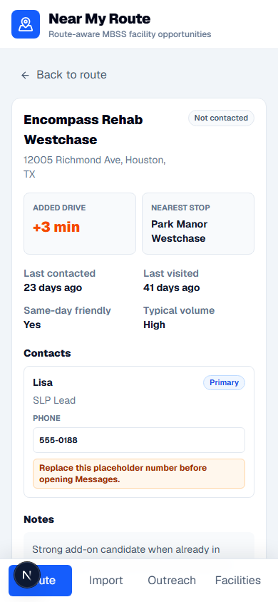
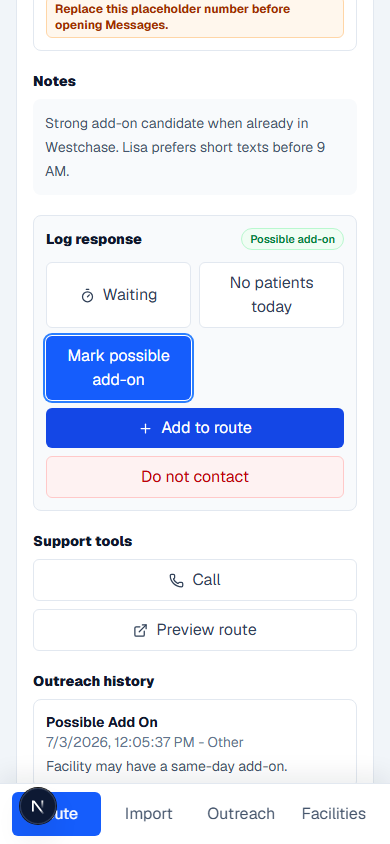
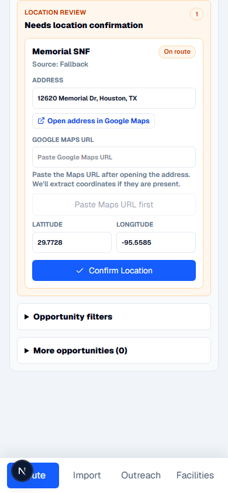
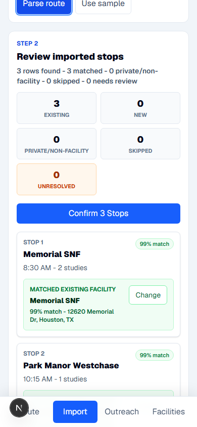
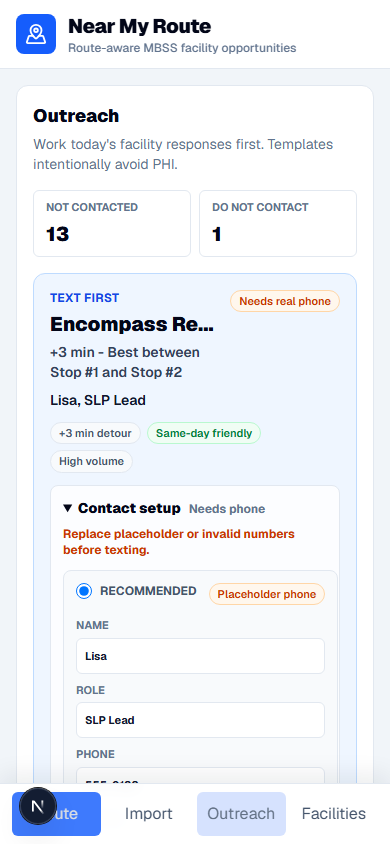
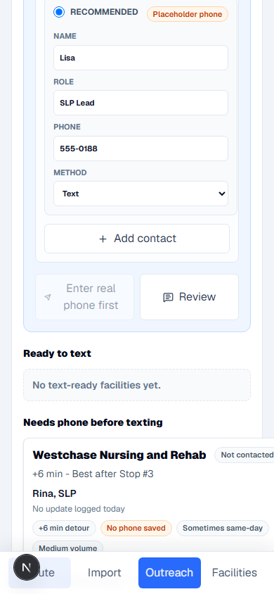
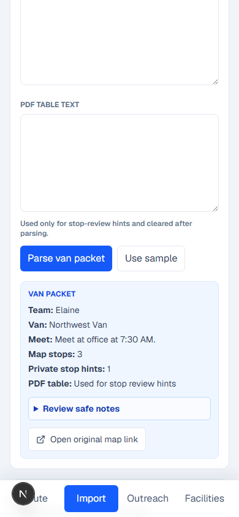
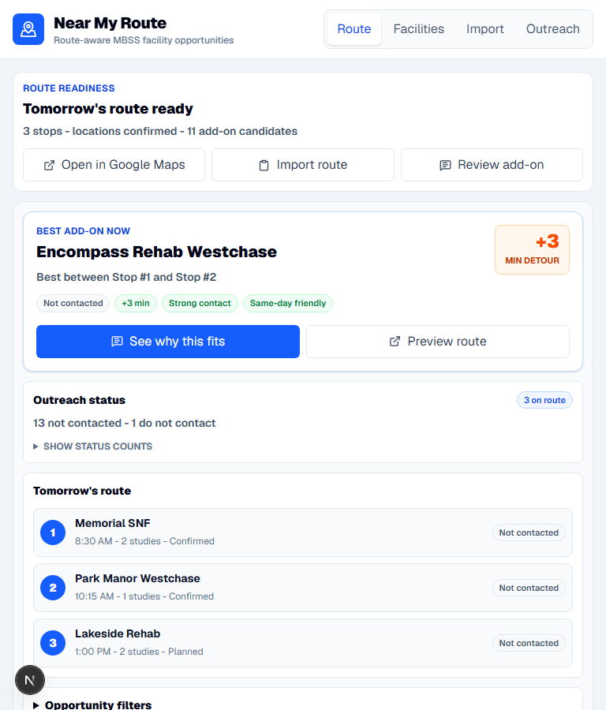
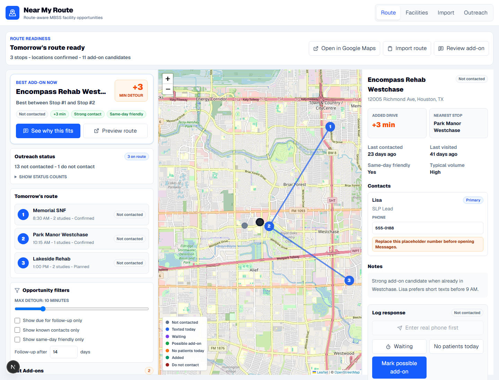

Workflow Redesign Final Cleanup Screenshots
Targeted pre-commit visual QA captures after mobile bottom-nav and phone-gating cleanup.
390px tentative add-on confirmation

390px facility detail possible add-on

390px facility detail add-to-route action

390px location confirmation action

390px import confirm-route action

390px outreach queue

390px outreach blocked text action

390px import review

768px route best add-on

1440px route best add-on
